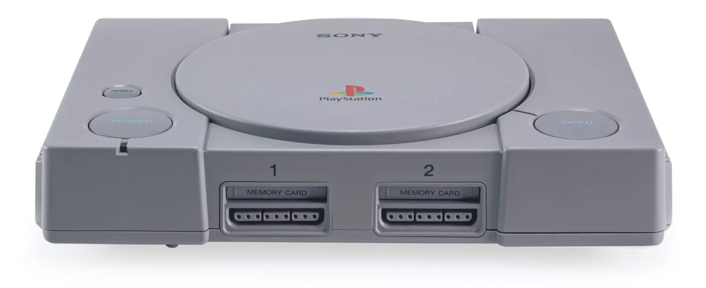
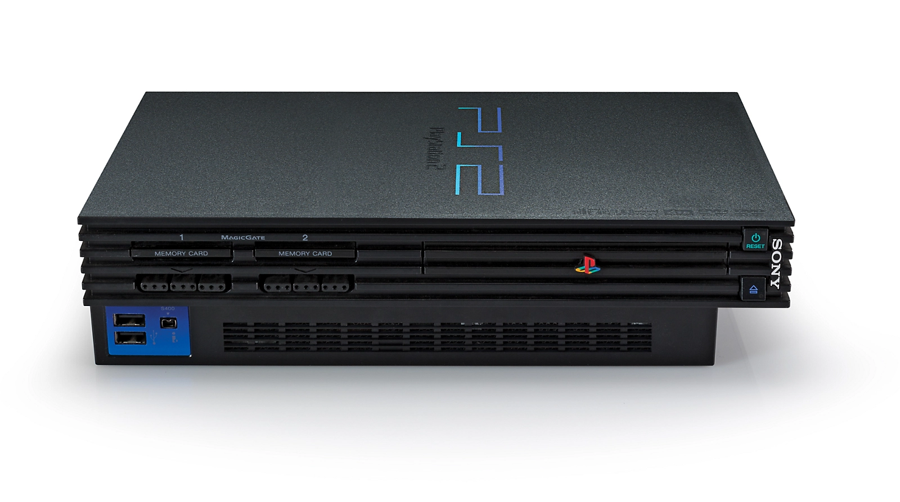
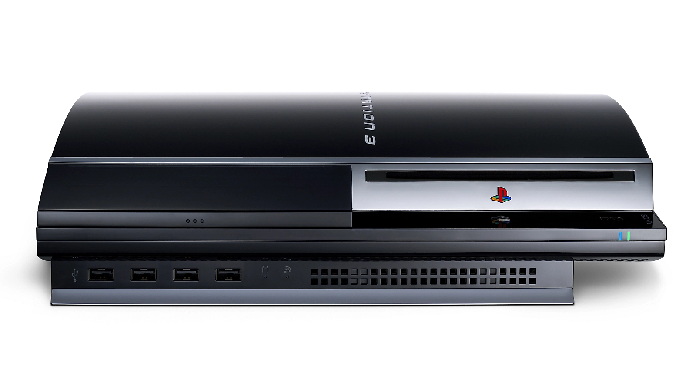
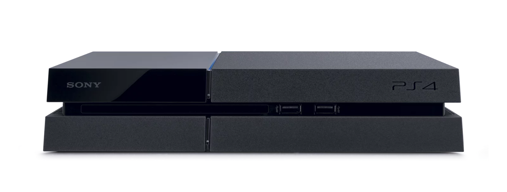
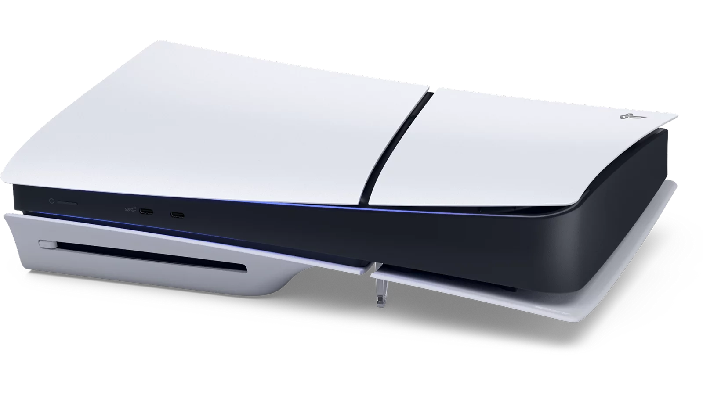

A História do PlayStation
Do PS1 ao PS5: a evolução que mudou o mundo dos videogames
O PlayStation revolucionou a indústria dos games, trazendo inovação, tecnologia e experiências inesquecíveis para milhões de jogadores ao redor do mundo. Desde seu lançamento em 1994, o PlayStation se tornou uma das marcas mais importantes da história dos videogames. Com consoles marcantes, jogos icônicos e tecnologia de ponta, a Sony redefiniu a forma como jogamos e nos conectamos através dos games.
Consoles em Destaque
Ao longo dos anos, o PlayStation evoluiu constantemente, trazendo novas experiências a cada geração.
- PlayStation (1994) – O início da era 3D nos consoles: 
- PlayStation 2 (2000) – O console mais vendido da história:
- PlayStation 3 (2006) – Gráficos avançados e jogos online: 
- PlayStation 4 (2013) – Foco em performance e serviços digitais: 
- PlayStation 5 (2020) – SSD ultrarrápido e nova geração gráfica: 
Jogos que Fizeram História
Alguns jogos marcaram gerações e ajudaram a construir a identidade do PlayStation:
- God of War
- The Last of Us
- Gran Turismo
- Uncharted
- Crash Bandicoot
Esses títulos se tornaram referência em qualidade, narrativa e inovação.
🤔 Você sabia?
O PlayStation 2 é o console mais vendido da história, com mais de 155 milhões de unidades comercializadas em todo o mundo.
Explore a trajetória de uma marca que não apenas criou consoles, mas construiu gerações de jogadores apaixonados por videogames.